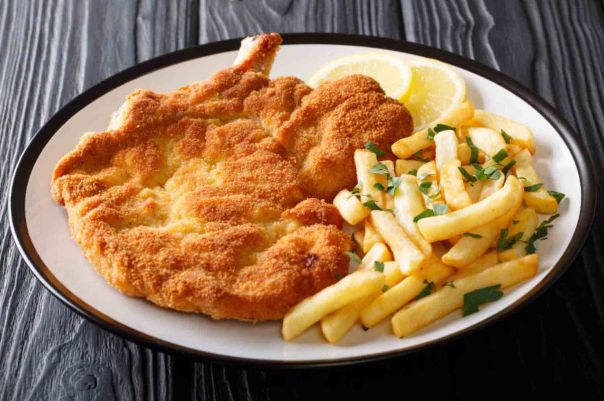

Home
Milanesa Recipe

Description
Existen muchas formas de hacer milanesas, pero todas quedan mejor si se dejan reposar en la mezcla de huevo. En cuanto a los rebozados quedan mucho más crocantes si se apanan con copos de cereal, polenta o semillas. Es tan popular que hasta tiene su propio día. Si querés que te salga perfecta lee esta nota con todos los consejos para prepararlas como un profesional.
Ingredients
- 4 huevos
- 2 dientes de ajo
- Perejil Picado
- Pan rallado
Steps
- Pelar los ajos y picar junto con el perejil.
- Colocar los huevos en un bowl y batir hasta disolverlos bien.
- Colocar la carne en la mezcla anterior, deje unos minutos, retirar y pasar por pan rallado.
- En una sartén con abundante aceite caliente freír las milanesas. Retirar y escurrir en papel absorbente.